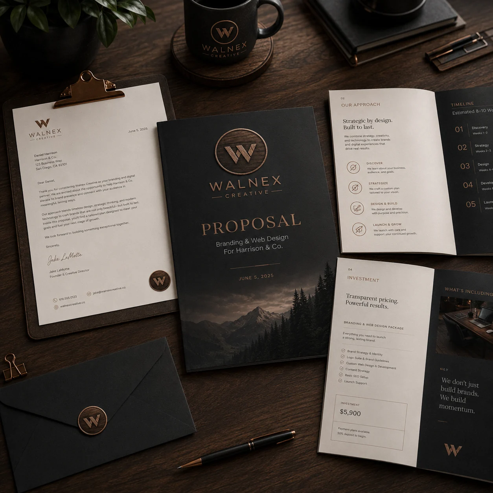
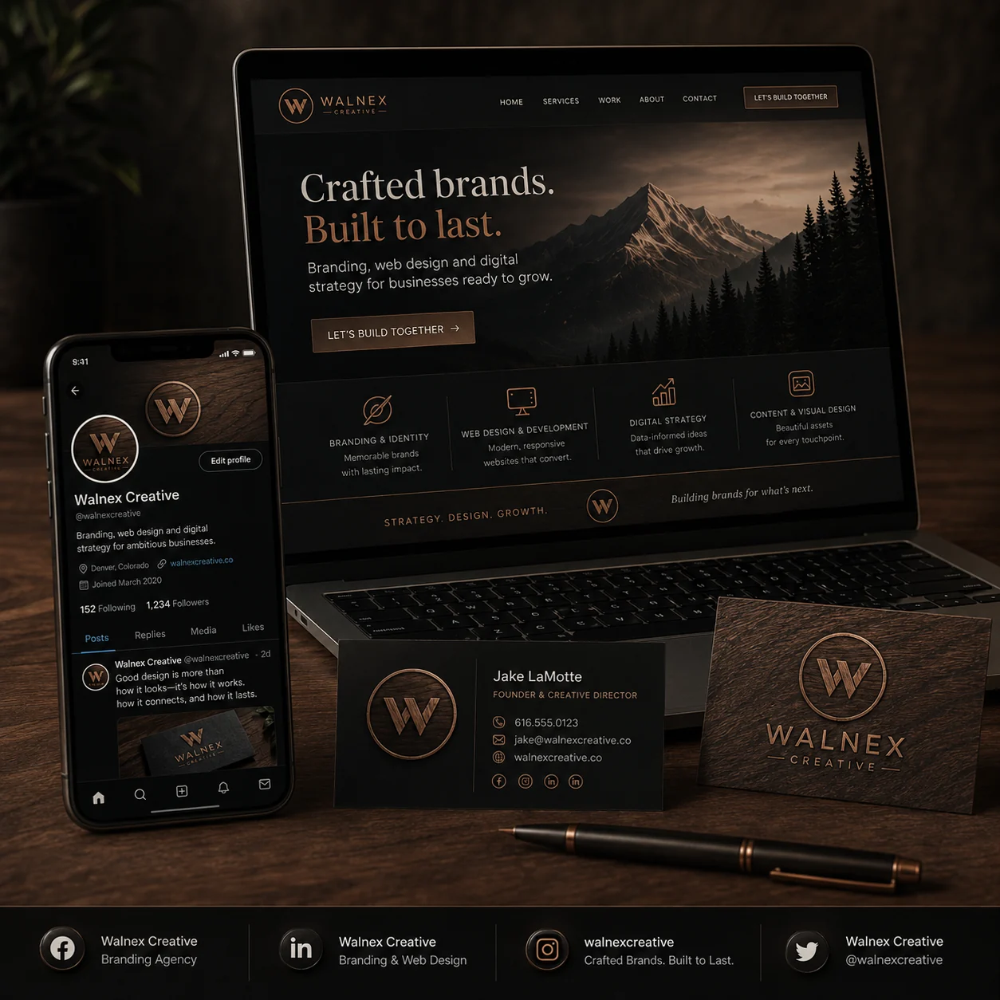
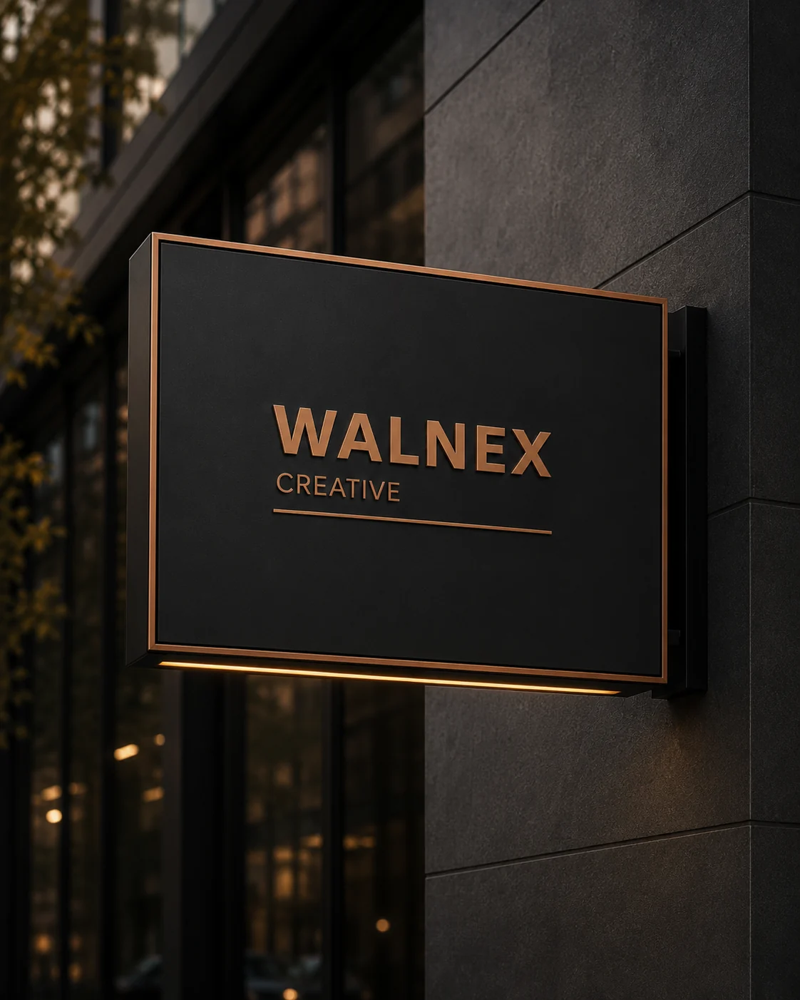
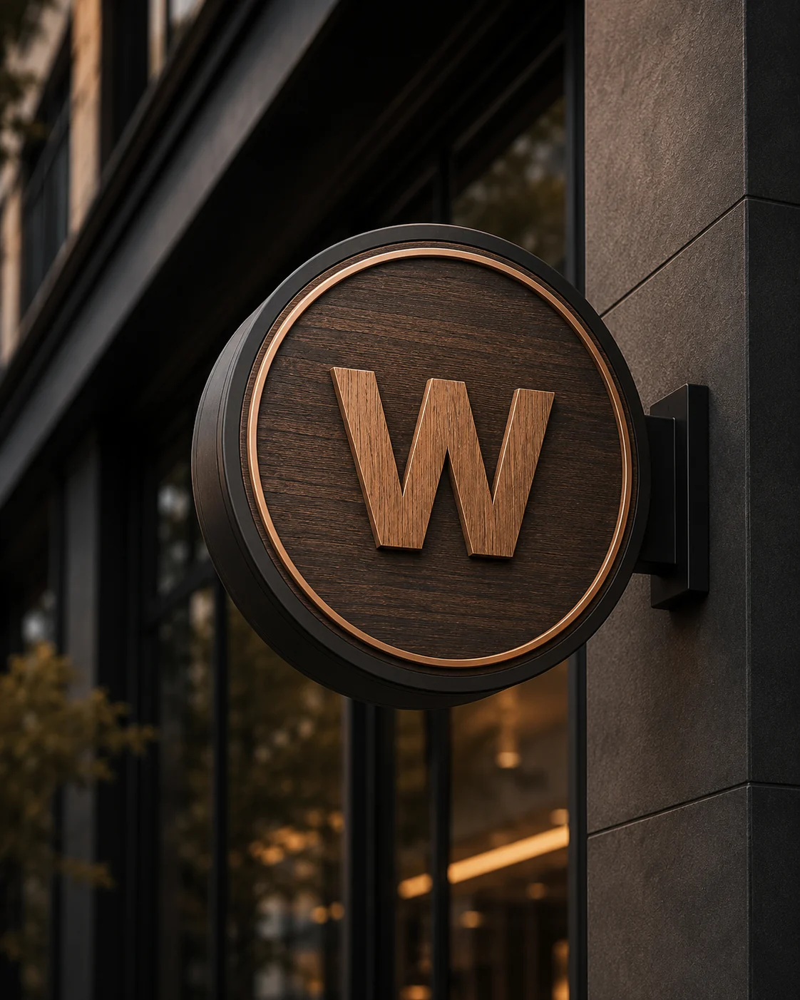
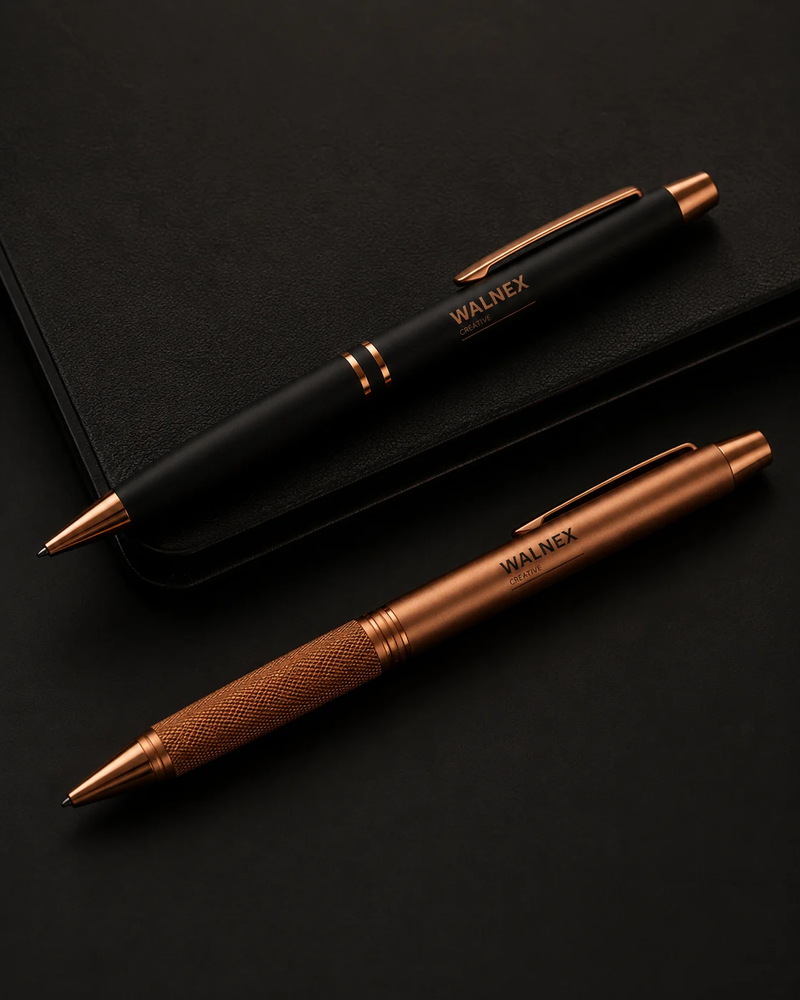
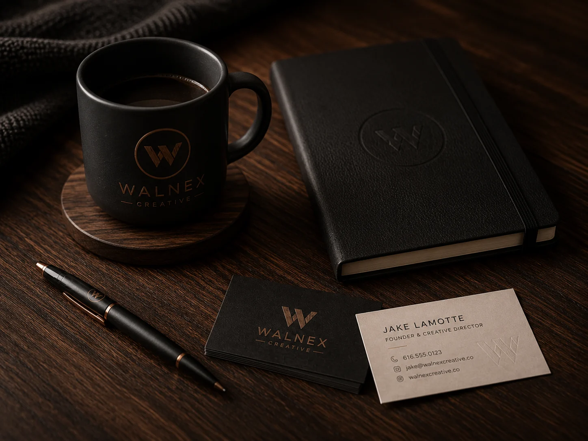

Creates trust faster
A polished identity helps customers feel like the business is serious from the first impression.
 WALNEXCREATIVE
WALNEXCREATIVE
Brand In Action
Branding is more than a logo file. It is how a startup or small business shows up across documents, websites, signage, everyday items, and customer touchpoints.
Why it matters
Consistency builds recognition. Recognition builds trust. When your identity carries across the things customers see, hold, click, sign, and remember, your business feels more real.
A polished identity helps customers feel like the business is serious from the first impression.
Colors, fonts, marks, and layouts work together instead of feeling pieced together.
Once the system exists, every new flyer, page, proposal, or profile has a clear direction.
Print & Stationery
Letterhead, proposals, business cards, thank-you cards, and forms that make client communication feel intentional.
Everyday Touchpoints
Pens, mugs, notebooks, apparel, stickers, and branded items that keep the business recognizable.
Physical Presence
Signage, vehicle graphics, storefront visuals, event displays, and location-based brand moments.
Digital Presence
Website graphics, email signatures, Google Business profiles, social visuals, and launch-ready digital assets.
Examples
These concept renderings show how one consistent brand system can extend across physical, digital, and client-facing touchpoints.






What a usable identity includes
A strong brand gives a startup the system it needs to show up consistently wherever customers interact with it.